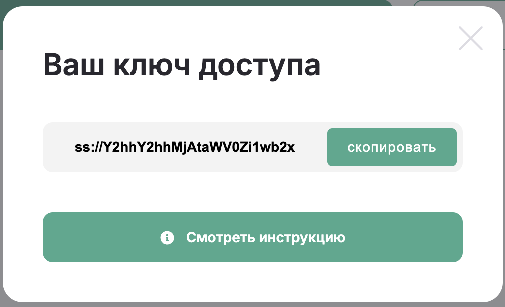
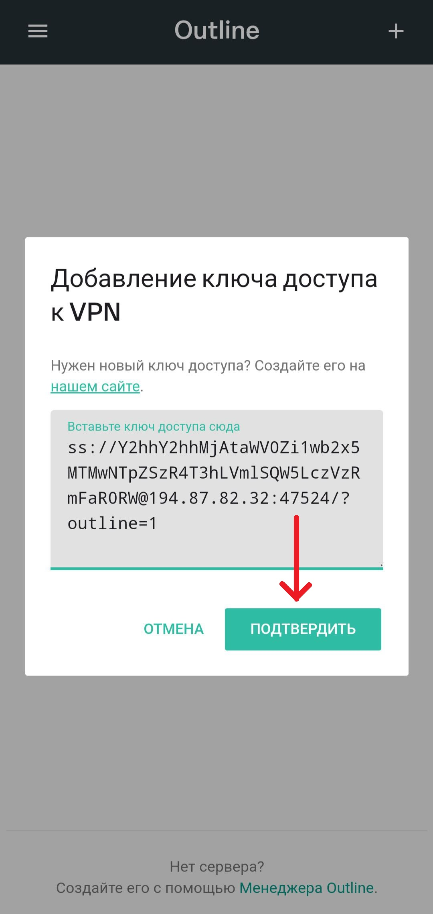
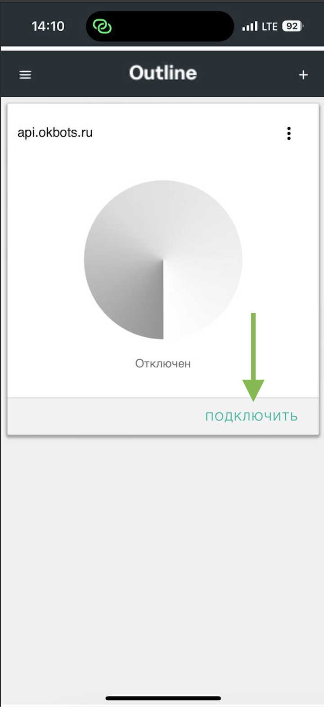

⌛ Установка VPN займет всего 2-3 минуты
☝️ При возникновении любых затруднений, пиши нам в телеграмм: @FlowVPN_support_xbot
Для начала тебе нужен ключ доступа. Он начинается с ss:// и продолжается набором символов. Ключ приходил тебе после оплаты. Но если ты его потерял, то ничего страшного. Если ты покупал подписку в телеграмм-боте, его можно посмотреть в нем (@FlowVPN_xbot)
Нажми кнопку со значком «+», которая находится в правом верхнем углу экрана. После вставь скопированный ключ и нажми на кнопку «Добавить сервер»
Чтобы использовать VPN нажми на кнопку «Подключить», а если хочешь прекратить использование VPN нажми на кнопку «Отключить»
🎉 Готово! VPN подключён и пригоден к использованию